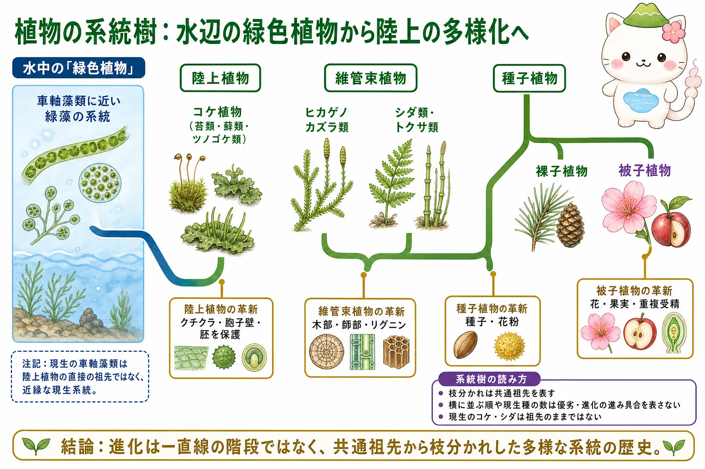
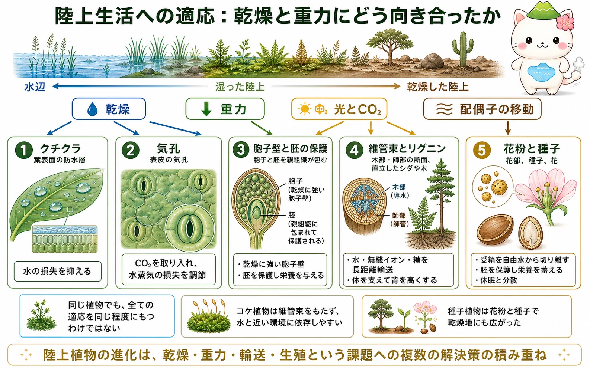

系統樹をどう読むか
系統樹の枝分かれは、系統どうしの共通祖先を表します。横に並ぶ順番や現生種の数は、優劣や「進化の進み具合」を示しません。現生のコケやシダ、車軸藻類に近い緑藻は、昔の祖先がそのまま残ったものではなく、祖先から同じように長い時間を進化してきた現生系統です。
分子系統学では、DNA配列などを比べて系統関係を推定します。陸上植物に最も近縁なのは、緑色植物のうち車軸藻類に近い系統であることが支持されています。ただし現生の車軸藻類そのものが陸上植物の直接の祖先ではありません。
陸上植物の大きな分岐
陸上植物には、苔類・蘚類・ツノゴケ類を含むコケ植物と、維管束をもつ維管束植物があります。維管束植物の中にはヒカゲノカズラ類、シダ類・トクサ類、そして種子植物があります。種子植物は裸子植物と被子植物へ分かれ、被子植物では花・果実・重複受精が重要な特徴になります。
これらは一列に並ぶ「進化段階」ではありません。それぞれの系統が現在まで残り、多様な環境に適応しています。分類名を覚えるときも、どこで共通祖先が分かれ、どの形質がその系統で共有されるかを結びつけると理解しやすくなります。


「コケ→シダ→種子植物」と一本道で覚えると、今生きているコケやシダを昔の植物だと思ってしまうよ。実際は、みんな同じ現在まで別々に進化してきた仲間なんだ。
陸上生活の課題と適応
陸上では、水を失いやすく、体を支え、光とCO2を受け取り、配偶子を移動させる必要があります。クチクラは表面からの水の損失を抑え、気孔はCO2の取り込みと水蒸気の損失の折り合いをつけます。乾燥に強い胞子壁と、親組織に守られた胚も陸上生活に重要です。
どの形質も一度に完成したわけではありません。陸上植物のさまざまな系統で、既存の構造を変化させながら、陸上の環境に合う組み合わせが作られてきました。

維管束・花粉・種子の意味
木部と師部からなる維管束は、水・無機イオン・糖を長距離輸送し、リグニンを含む組織は体を支えます。これにより植物は背を高くし、根と葉を離して働かせられるようになりました。コケ植物は真の維管束をもたないため、水に近い環境への依存が比較的大きくなります。
花粉は精細胞を運ぶ雄性配偶体で、受精を自由水から切り離しました。種子は胚を保護し、栄養を蓄え、休眠と分散を可能にします。被子植物では花と果実が受粉・種子散布の選択肢を広げました。
現生植物を祖先扱いしない
進化を学ぶときは、現生生物を「途中の形」と呼ばないことが大切です。コケ植物、シダ類、裸子植物、被子植物のどれも、現在の環境で生き残る形質をもつ現生の系統です。種子や花をもたないことは未完成を意味しません。
系統と形質を分けて考えると、似た環境に適応して似た形が別系統で生じる収斂進化や、古い形質が別の役割で残ることも理解しやすくなります。
花粉や種子は乾燥地で強力なしくみだけれど、それを持たない植物が劣っているわけではないよ。形質は、それぞれの系統と環境の中で意味をもつんだ。
この冊子の要点
- 系統樹の枝分かれは共通祖先を表し、現生種の並びや数は優劣を示しません。
- 陸上植物は、コケ植物と維管束植物を含み、維管束植物の中にシダ類・種子植物などがあります。
- クチクラ、気孔、胞子壁、胚の保護は、乾燥した陸上で生きるための重要な適応です。
- 維管束・リグニン、花粉・種子、花・果実は、輸送・支持・生殖の可能性を広げました。
参照資料
- OpenStax Biology 2e：Evolution of Seed Plants
- OpenStax Biology 2e：Angiosperms
- Raven et al., Biology of Plants, W. H. Freeman.